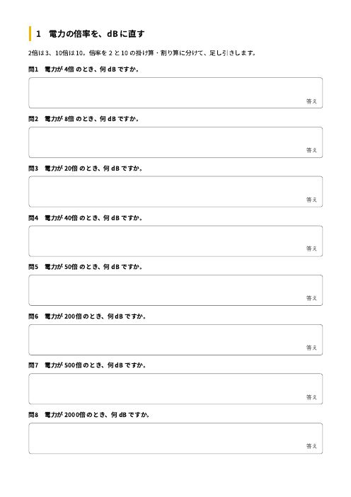

電卓なしのデシベル 書き込み式の問題集 40問
このページは、売り物の案内です。買う前に、中身と、向く人・向かない人を確かめてください。
向く人、向かない人
| 向く人 | 対策の本の解説で、デシベルの行になると手が止まる人。点検で「デシベル」を外した人。 |
|---|---|
| 向かない人 | デシベルの計算に迷わない人。無線の中身や法規を学びたい人（扱っていません）。 |
中身
| まとまり | 問題の数 |
|---|---|
| 1. 電力の倍率を dB に直す | 8問 |
| 2. dB を電力の倍率に戻す | 8問 |
| 3. 小さくなる向き | 6問 |
| 4. 電圧の倍率 | 6問 |
| 5. dBm と W の行き来 | 6問 |
| 6. 足してよい物、いけない物 | 6問 |
答えは、分け方の式つきです。問題は自分で作ったもので、過去問題そのものではありません。合格を約束する物ではありません。
こういう問題です
電力が40倍のとき、何 dB ですか。
23 dB は、電力の何倍ですか。
電圧が20倍のとき、何 dB ですか。
23 dB は、電力の何倍ですか。
電圧が20倍のとき、何 dB ですか。
答え
40 ＝ 2 × 2 × 10 なので、3 ＋ 3 ＋ 10 ＝ 16 dB。23 ＝ 10 ＋ 10 ＋ 3 なので、10 × 10 × 2 ＝ 200倍。電圧は 2倍が 6 dB、10倍が 20 dB なので、6 ＋ 20 ＝ 26 dB。この3問で迷わなければ、この問題集は要りません。解き方は、デシベルを 3 と 10 だけで出すページに、無料で書いてあります。
見本

買う場所
BOOTH（ピクシブが運営する、作った物を売り買いする場所）で、PDF をダウンロードする形です。
最終更新：2026年11月13日